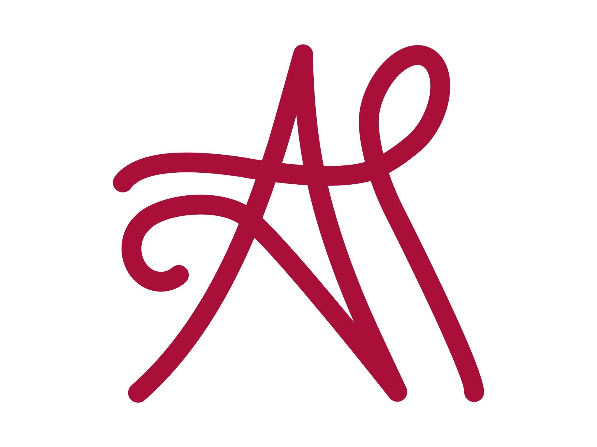
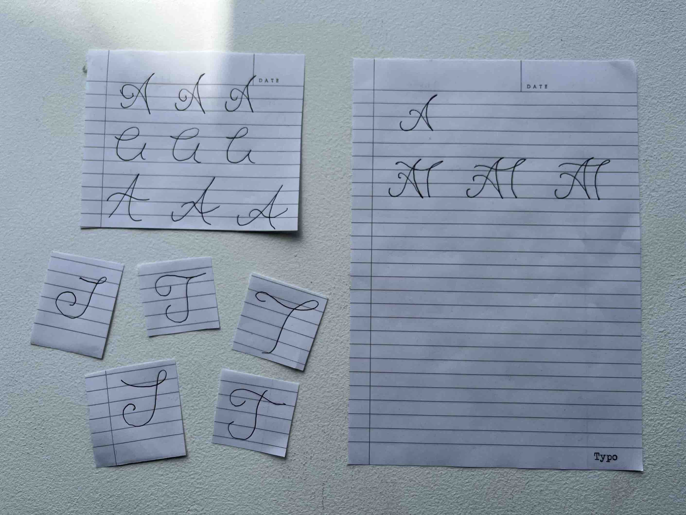
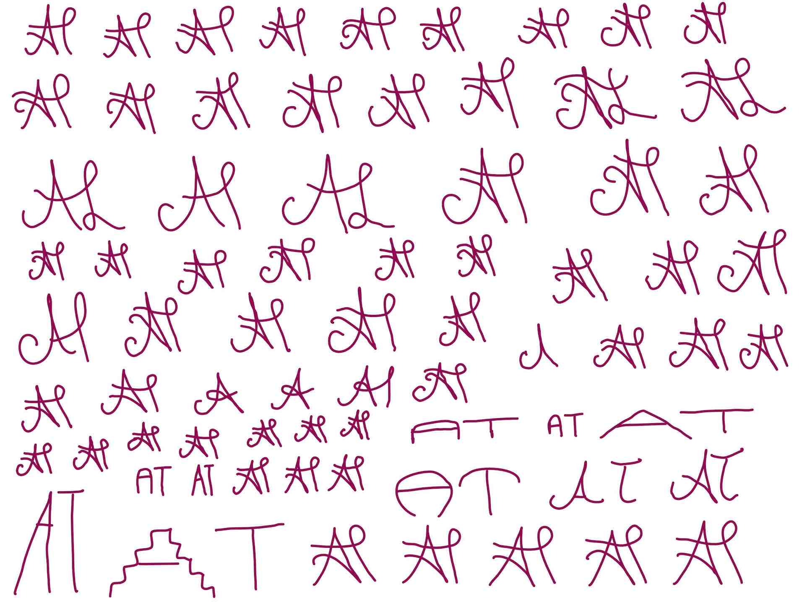
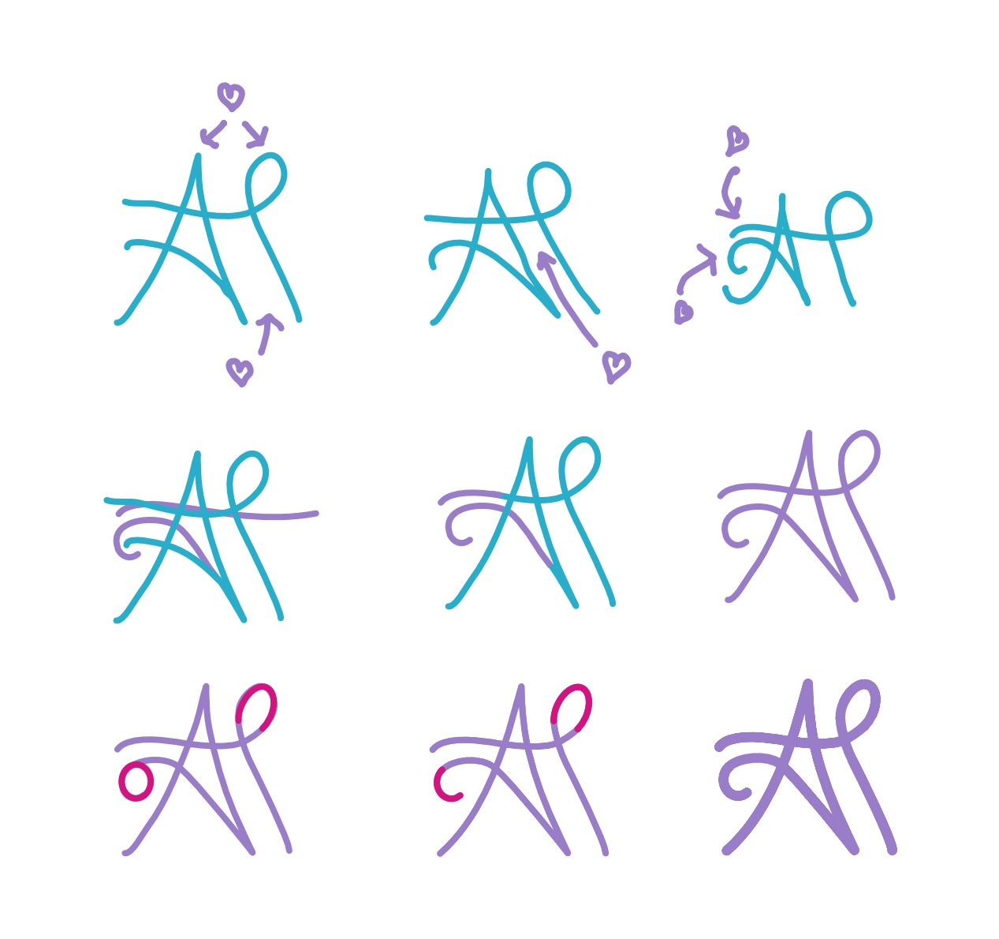
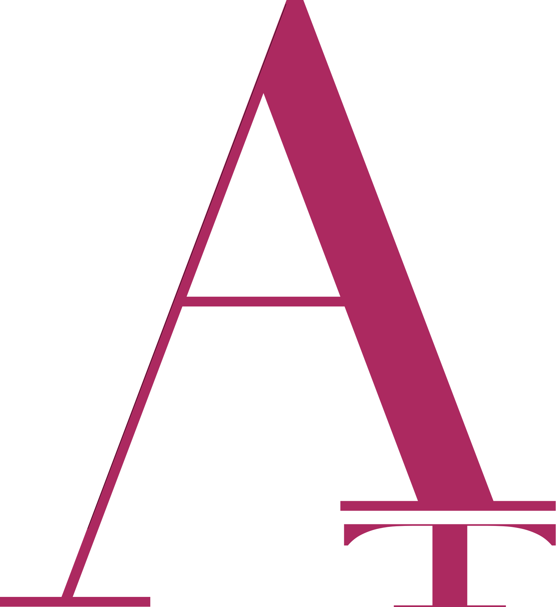

Monograms
My initials "AT"
I find typography to be one of the most fascinating, but also most complicated topics in design. I have spent months studying this topic (and pulled a few all-nighters to decide on what font to use for this portfolio). I am still in the middle of this project but very keen to share my progress and get expert feedback.
Script
The Letter T: May I have this dance?
The Letter A: Yes you may...
I actually didn't know where to start so I spent a day looking up typefaces and fonts and then trying to freehand my own.
I selected the pairs I liked the most and identified what I specifically liked about each. This allowed me to reconstruct the pair wtih the best features of each while also cleaning up.
This is the almost final script and I would like to make some variations where overlaps and shadows can be seen in the letters.
San Serif (Rework needed...)
This was my favorite however I would like to reconstruct the letter to make it more original
Serif (Redesign planned...)
Here the "A" is squashing the "T", however I do plan to restart this one and do something completly different.
